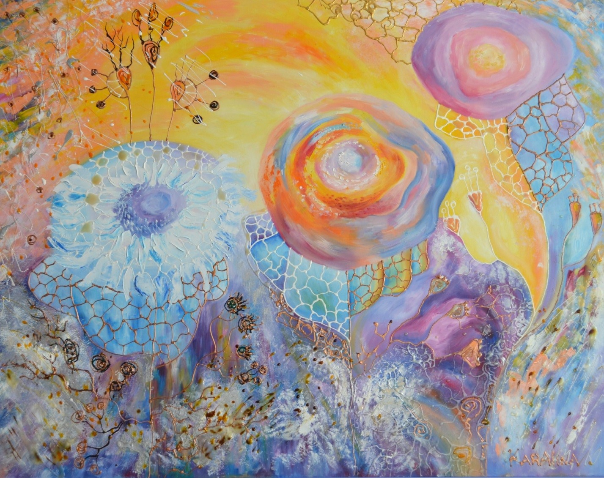

Воспитание — дело совести; образование — дело науки. Позднее, в уже сложившемся человеке, оба эти вида дополняют друг друга.
6 КОНЦЕПТУАЛЬНЫХ НАПРАВЛЕНИЙ МОДЕРНИЗАЦИИ ОБЩЕСТВА НА ОСНОВЕ ПРОГРАММЫ «РУХАНИ ЖАҢҒЫРУ»
КОНКРЕТНЫЕ ПРОЕКТЫ НА БЛИЖАЙШИЕ ГОДЫ
Гражданская позиция предполагает: готовность к выполнению общественных обязанностей и использованию своих гражданских прав; способность к саморефлексии через усвоение общественных законов, проявление гражданского долга и ответственности; осознание и осуществление своих прав и обязанностей для эффективного межличностного общения; осознанную позицию патриота Отечества. Также гражданская позиция должна включать: с одной стороны, согласно современным трендам развития общества, социальную ответственность каждого, понимаемую нами как бескорыстное служение Родине; с другой стороны, опираясь на исторически сложившуюся у казахского народа национальную идею «жить по совести». Еще в конце XIX в казахском обществе существовало понятие - «Наука совести» - понятие, введенное Шакаримом. Современные отечественные ученые, осмысливая современные тренды, приходят к мысли, что в зарубежных странах происходит жёсткая подмена понятий, которая препятствует преемственности поколений и воспроизводству духовных ценностей общества. Так, философ Г. Есим отмечает «Учение о человеке называется антропологией, а есть ли учение о хорошем человеке? Отделив от человека человеческое, мы создали науку, которая называется этикой, Шакарим же называл ее учением совести». Сохранение национальной идентичности заключается в ориентации личности на сохранение самобытности этнической группы, к которой она принадлежит, и одновременно, на освоение ценностей и стандартов народа титульной нации (к примеру, казахского народа в Казахстане). Общество в процессе модернизации должно сочетать мировой уровень технологического и информационного развития с традиционными культурными ценностями страны, народа, этноса для идентификации личности со своей исконной культурой и усвоения других культур. Н.Назарбаев в своей статье «Взгляд в будущее: модернизация общественного сознания» суть сохранения национальной идентичности он видит в том, что «Во-первых, это изменение в рамках национального сознания. Во-вторых, это сохранение внутреннего ядра национального «Я» при изменении некоторых его черт.
Задание 1. Сочините рассказ или притчу, или стих о совести.
Задание 2. Напишите эссе на тему «Воспитание – дело совести».
